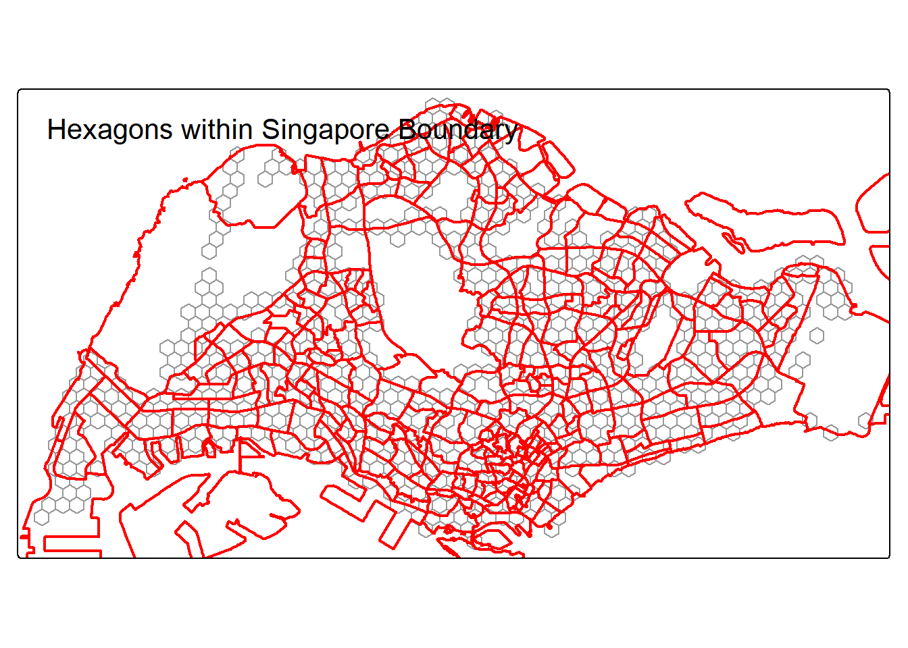

pacman::p_load(sf,tmap,tidyverse,rvest, knitr, sfdep)In-class Ex06
1 Overview
2 Getting started
2.1 Loading Packages in to R
Side note: use knitr to general reports.
2.2 Getting the Data into R environment
Singapore boundary data, that we explored in Hands-on Ex 1-2
LTADataMall: bus stop locations in SHP
LTADataMall: the bus trip data for August 2025 were retrieved using GetPostman to download the CSV file.
mpsz <- st_read("data/geospatial/MasterPlan2019SubzoneBoundaryNoSeaKML.kml")Reading layer `URA_MP19_SUBZONE_NO_SEA_PL' from data source
`C:\lsrgc\ISSS626-yiqiong-pan\In-class_Ex\In-class_Ex06\data\geospatial\MasterPlan2019SubzoneBoundaryNoSeaKML.kml'
using driver `KML'
Simple feature collection with 332 features and 2 fields
Geometry type: MULTIPOLYGON
Dimension: XY
Bounding box: xmin: 103.6057 ymin: 1.158699 xmax: 104.0885 ymax: 1.470775
Geodetic CRS: WGS 84extract_kml_field <- function(html_text, field_name) {
# return NA if missing or empty
if (is.na(html_text) || html_text == "") return(NA_character_)
page <- read_html(html_text) #parse the HTML string
rows <- page %>% html_elements("tr") #get all table rows <tr>
value <- rows %>%
keep(~ html_text2(html_element(.x, "th")) == field_name) %>% #keep row where <th> table header text = field_name
html_element("td") %>% #take its <td> table data
html_text2() #extract clean text
if (length(value) == 0) NA_character_ else value #return NA if no match, otherwise the value
}mpsz <- mpsz %>%
mutate(
#for each description string, call the function, It returns a length-1 character per row (or NA)
REGION_N = map_chr(Description, extract_kml_field, "REGION_N"),
PLN_AREA_N = map_chr(Description, extract_kml_field, "PLN_AREA_N"),
SUBZONE_N = map_chr(Description, extract_kml_field, "SUBZONE_N"),
SUBZONE_C = map_chr(Description, extract_kml_field, "SUBZONE_C")
) %>%
select(-Name, -Description) %>% #drop the raw KML attributes
relocate(geometry, .after = last_col()) #move the geometry column to the endwrite_rds(mpsz, "data/rds/mpsz.rds")class(mpsz)[1] "sf" "data.frame"mpsz <- st_transform(mpsz, 3414)
st_crs(mpsz)Coordinate Reference System:
User input: EPSG:3414
wkt:
PROJCRS["SVY21 / Singapore TM",
BASEGEOGCRS["SVY21",
DATUM["SVY21",
ELLIPSOID["WGS 84",6378137,298.257223563,
LENGTHUNIT["metre",1]]],
PRIMEM["Greenwich",0,
ANGLEUNIT["degree",0.0174532925199433]],
ID["EPSG",4757]],
CONVERSION["Singapore Transverse Mercator",
METHOD["Transverse Mercator",
ID["EPSG",9807]],
PARAMETER["Latitude of natural origin",1.36666666666667,
ANGLEUNIT["degree",0.0174532925199433],
ID["EPSG",8801]],
PARAMETER["Longitude of natural origin",103.833333333333,
ANGLEUNIT["degree",0.0174532925199433],
ID["EPSG",8802]],
PARAMETER["Scale factor at natural origin",1,
SCALEUNIT["unity",1],
ID["EPSG",8805]],
PARAMETER["False easting",28001.642,
LENGTHUNIT["metre",1],
ID["EPSG",8806]],
PARAMETER["False northing",38744.572,
LENGTHUNIT["metre",1],
ID["EPSG",8807]]],
CS[Cartesian,2],
AXIS["northing (N)",north,
ORDER[1],
LENGTHUNIT["metre",1]],
AXIS["easting (E)",east,
ORDER[2],
LENGTHUNIT["metre",1]],
USAGE[
SCOPE["Cadastre, engineering survey, topographic mapping."],
AREA["Singapore - onshore and offshore."],
BBOX[1.13,103.59,1.47,104.07]],
ID["EPSG",3414]]BusStop <- st_read(dsn = "data/LTADataMall",
layer = "BusStop") %>%
st_transform(crs = 3414)Reading layer `BusStop' from data source
`C:\lsrgc\ISSS626-yiqiong-pan\In-class_Ex\In-class_Ex06\data\LTADataMall'
using driver `ESRI Shapefile'
Simple feature collection with 5172 features and 2 fields
Geometry type: POINT
Dimension: XY
Bounding box: xmin: 3970.122 ymin: 26482.1 xmax: 48285.52 ymax: 52983.82
Projected CRS: SVY21odbus <- read_csv("data/LTADataMall/origin_destination_bus_202508.csv")
summary(odbus) YEAR_MONTH DAY_TYPE TIME_PER_HOUR PT_TYPE
Length:5876969 Length:5876969 Min. : 0.00 Length:5876969
Class :character Class :character 1st Qu.:10.00 Class :character
Mode :character Mode :character Median :14.00 Mode :character
Mean :14.07
3rd Qu.:18.00
Max. :23.00
ORIGIN_PT_CODE DESTINATION_PT_CODE TOTAL_TRIPS
Length:5876969 Length:5876969 Min. : 1.00
Class :character Class :character 1st Qu.: 2.00
Mode :character Mode :character Median : 4.00
Mean : 20.89
3rd Qu.: 13.00
Max. :34148.00 Here we plot the bus stops in Singapore to see the distribution of their locations.
tm_shape(mpsz) +
tm_polygons() +
tm_shape(BusStop) +
tm_dots()
Since there are a few points located outside the Singapore boundary, these need to be excluded. If we encounter an error message such as st_crs(x) != st_crs(y), it indicates that the coordinate reference systems (CRS) of the two objects are not the same. In such cases, we should assign the correct and consistent CRS (i.e., EPSG:3414). Both st_transform() and st_set_crs() can be used to apply the appropriate CRS.
BusStop_in_SG <- st_join(
BusStop, mpsz,
join = st_within,
left = FALSE)Next, we double-check that the points have been correctly filtered to include only those within Singapore.
tm_shape(mpsz) +
tm_polygons() +
tm_shape(BusStop_in_SG) +
tm_dots()
2.3 Creating the analytical hexagons (Singapore with Honeycomb Grid)
- cellsize: A numeric value (length 1 or 2) specifying the target cell size. For square/rectangular cells, this defines width and height. For hexagonal cells, it defines the distance between opposite edges. So for the actual analysis, we should use
cellsize = 750.
hexagon <- st_make_grid(mpsz,
cellsize = 750, ## attention 375m required for take-home ex.
what = "polygon",
square = FALSE) %>%
st_sf() ## this st_* function doesn't return sf data.frame, we need to specifically coerce the file to sf object.We identified two tasks from the hexagon:
In mpsz, the unique IDs SUBZONE_N or SUBZONE_C should be attached to the hexagon geometries.
Keep only hexagons that contain at least one bus stop.
To implement this, we first filter the hexagons using a spatial intersection with the bus-stop points.
Recall: st_intersection() returns the geometric overlap (catchment), while st_intersects() returns a logical relation (TRUE/FALSE). After filtering, the hexagon count is reduced from 4,524 to 924.
hexagon$n_collisions =
lengths(st_intersects(hexagon, BusStop_in_SG))hexagon <- filter(hexagon, n_collisions >0)The code chunk below removes the unwanted column and generates a set of 4-digit HEX_ID strings with leading zeros, then converts them from character to factor (ID) type using as.factor().
| geometry | HEX_ID |
|---|---|
| POLYGON ((3792.538 27656.57… | H0001 |
| POLYGON ((4167.538 28306.09… | H0002 |
| POLYGON ((4542.538 30254.65… | H0003 |
| POLYGON ((4542.538 31553.68… | H0004 |
| POLYGON ((4917.538 28306.09… | H0005 |
| POLYGON ((4917.538 29605.13… | H0006 |
2.4 Tidying the trip data
Year_Month and destination_pt_code can be excluded from this analysis.
# select the variables
trips <- odbus %>%
select (c(ORIGIN_PT_CODE, DAY_TYPE, TIME_PER_HOUR, TOTAL_TRIPS)) %>%
rename(BUS_STOP_N = ORIGIN_PT_CODE) %>% # easier when performing join later
rename(HOUR_OF_DAY= TIME_PER_HOUR) %>%
rename(TRIPS = TOTAL_TRIPS) #easy interprationThe BUS_STOP_N (post code of bus stop origination) is converted to factor since they are unique identifier and easier grouping group_by later.
| BUS_STOP_N | DAY_TYPE | HOUR_OF_DAY | TRIPS |
|---|---|---|---|
| 84671 | WEEKENDS/HOLIDAY | 9 | 3 |
| 10099 | WEEKENDS/HOLIDAY | 13 | 31 |
| 64601 | WEEKENDS/HOLIDAY | 21 | 3 |
| 53009 | WEEKENDS/HOLIDAY | 16 | 10 |
| 80051 | WEEKENDS/HOLIDAY | 18 | 4 |
| 70031 | WEEKDAY | 14 | 1 |
Next, we combine the hexagon, bus stop, and trip datasets.
This code creates a lookup table linking each bus stop BUS_STOP_N to the hexagon it belongs to HEX_ID
| BUS_STOP_N | HEX_ID | |
|---|---|---|
| 3092 | 25059 | H0001 |
| 2439 | 25751 | H0002 |
| 241 | 26379 | H0003 |
| 1468 | 26299 | H0004 |
| 2554 | 25761 | H0005 |
| 1635 | 26399 | H0006 |
We merge the HEX_ID and Bus Stop into trip data.
trips<- inner_join(trips, bs_hex)
kable(head(trips))| BUS_STOP_N | DAY_TYPE | HOUR_OF_DAY | TRIPS | HEX_ID |
|---|---|---|---|---|
| 84671 | WEEKENDS/HOLIDAY | 9 | 3 | H0765 |
| 10099 | WEEKENDS/HOLIDAY | 13 | 31 | H0393 |
| 64601 | WEEKENDS/HOLIDAY | 21 | 3 | H0633 |
| 53009 | WEEKENDS/HOLIDAY | 16 | 10 | H0529 |
| 80051 | WEEKENDS/HOLIDAY | 18 | 4 | H0601 |
| 70031 | WEEKDAY | 14 | 1 | H0612 |
Plot the hexagons.
tm_shape(hexagon) + tm_borders(col = "grey60") +
tm_shape(mpsz) + tm_borders(col = "red", lwd = 2) +
tm_layout(title = "Hexagons within Singapore Boundary")
Two more steps are required before we begin the analysis:
Convert the data into a space–time cube to run EHSA on that cube.